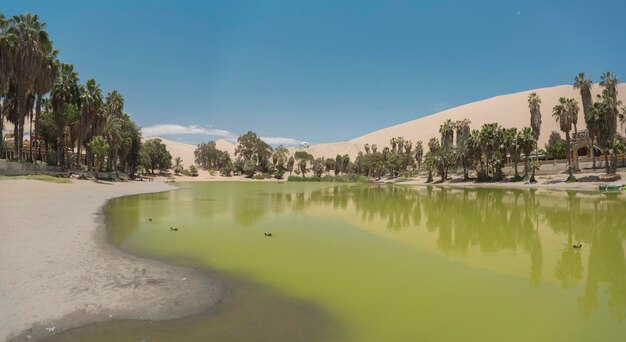

1.Turismo y Actividades

- Sandboarding: Deslizarse sobre las dunas de arena en una tabla es una actividad muy emocionante que atrae a aventureros y deportistas extremos.
- Paseos en buggies: Vehículos todo terreno llevan a los turistas por las dunas para disfrutar de vistas impresionantes y momentos llenos de adrenalina.
- Relajación y paisaje: Además de las actividades extremas, el oasis es un lugar para relajarse junto a la laguna, disfrutar de su belleza natural y admirar los atardeceres en el desierto.
2.Formación y Geografía
- La laguna tiene aproximadamente 200 metros de longitud y es un lugar pequeño, pero de gran belleza y atractivo para turistas nacionales e internacionales.
- Huacachina es una laguna natural formada por un manantial de agua dulce en medio del desierto costero peruano.
- Está rodeada por dunas de arena que alcanzan alturas de hasta 100 metros, lo que crea un paisaje único y dramático.
3.Cultura y Leyendas

- El nombre "Huacachina" proviene del quechua y significa "mujer que llora".
- Según la leyenda local, el oasis fue formado por las lágrimas de una princesa inca que lloraba por su amado guerrero perdido en el desierto.
- Esta historia añade un aura de misterio y romanticismo al lugar
4.Importancia Económica

- El oasis es una fuente importante de ingresos para la región de Ica, gracias al turismo.
- Atrae a miles de visitantes al año y genera empleo en sectores como la hotelería, la gastronomía, el transporte y las actividades recreativas.